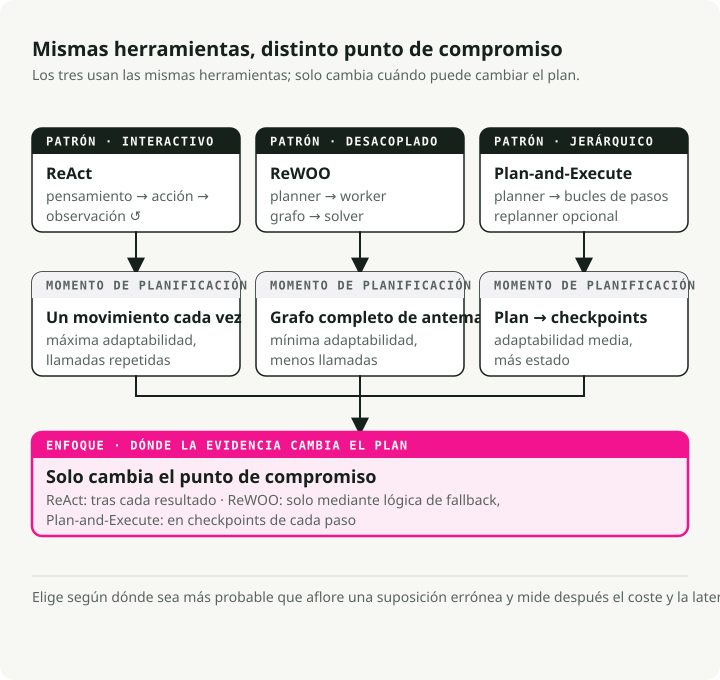
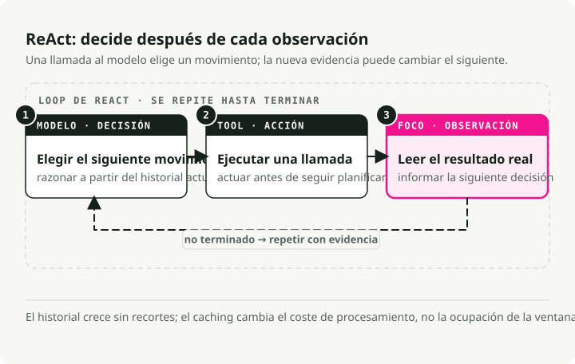
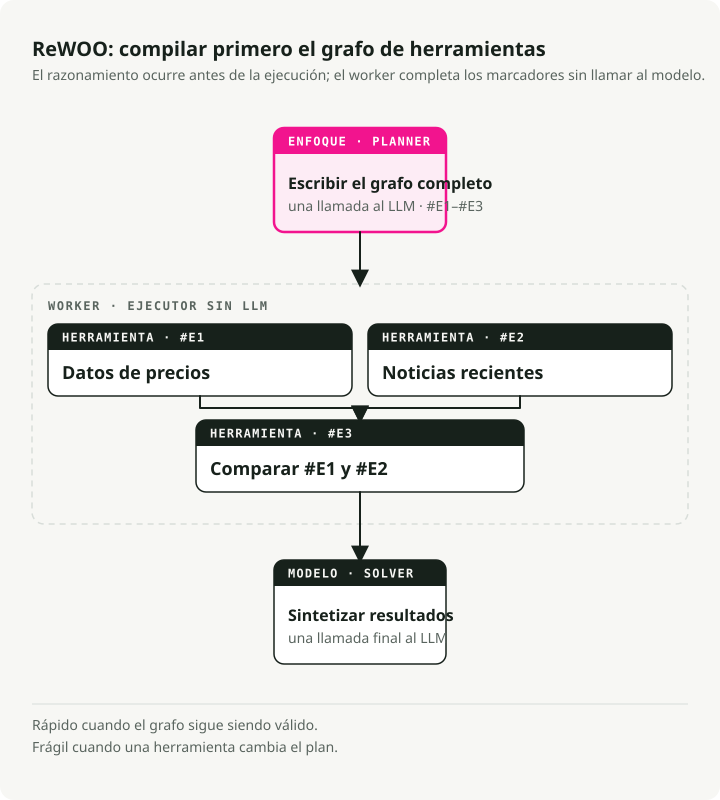
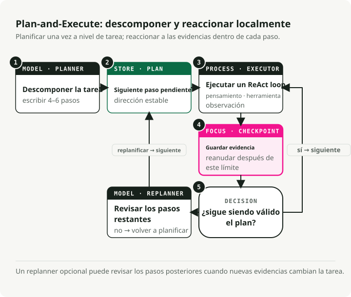
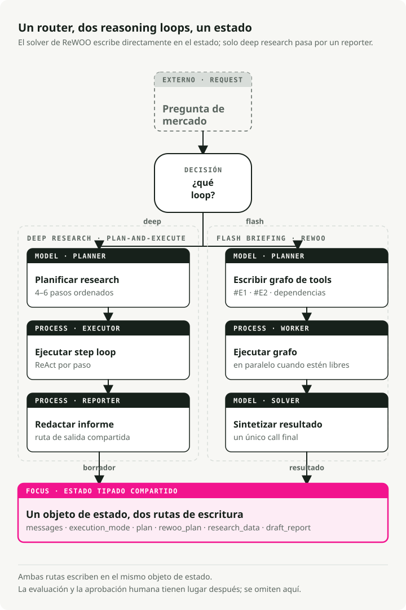

Traducción automática
Este artículo se tradujo automáticamente a partir de la versión original en inglés.
Bucles de razonamiento de agentes de IA en 2026: ReAct vs ReWOO vs Planificar y ejecutar
Parte 1 de la serie “Ingeniería de la pila agente”
La creación de agentes de IA útiles se basa hoy en día principalmente en el diseño del sistema, y no en la ingeniería de prompts. La decisión más importante es el bucle de razonamiento del agente: cómo el sistema planifica, llama a las herramientas, observa los resultados y decide cuándo detenerse.
Este artículo compara los tres patrones de bucle de agente de IA que merecen conocerse en 2026: ReAct, ReWOO y Plan-and-Execute. El ejemplo práctico es un Agente Analista de Mercados que desarrollé en LangGraph; el código completo está disponible en GitHub.
TL;DR: ReAct es flexible pero costoso, ReWOO es rápido cuando el flujo de trabajo es predecible, y Plan-and-Execute es adecuado para análisis de múltiples pasos. Un agente de IA en producción puede alternar entre bucles de razonamiento por solicitud, utilizando estado compartido y nodos LangGraph con puntos de control, de modo que cada tarea reciba el bucle que se ajuste a su estructura.
Por qué son importantes los bucles de razonamiento de los agentes de IA
Hace un año, hacer que un LLM fuera útil se reducía principalmente a la formulación de las instrucciones. Ahora se trata del diseño de grafos: de cómo se conectan la razonamiento, el uso de herramientas y la memoria.
El bucle de razonamiento se encuentra en el centro de dicho grafo. Determina cuándo el modelo debe pensar, cuándo debe llamar a una herramienta y cuándo debe detenerse. Elegir el incorrecto implica gastar tokens adicionales en llamadas innecesarias, añadir segundos de latencia por turno, o que el agente falle la primera vez que una herramienta devuelva algo inesperado.
Tres patrones de razonamiento de agentes de IA

ReAct: pensar, actuar, observar, repetir
ReAct (Yao et al., 2022) constituye el modelo original para los agentes interactivos. Este funciona mediante un bucle que sigue estos pasos:
- Pensamiento: el agente genera un “pensamiento” con el fin de desglosar el objetivo y planificar el siguiente paso.
- Acción: basándose en dicho pensamiento, el agente llama a una herramienta correspondiente.
- Observación: el agente analiza el resultado obtenido, lo cual actualiza su comprensión para el siguiente proceso de pensamiento.

Ventajas:
- El hecho de basarse en observaciones reales reduce la aparición de datos inventados.
- El agente puede cambiar de estrategia en tiempo real según lo que acaba de ver.
- El “bloque de notas” permite mantener un registro detallado del razonamiento seguido.
Desventajas:
- La historia se acumula y se vuelve a procesar en cada paso, por lo que la latencia y el costo aumentan con la longitud del bucle.
- Es una pérdida de recursos cuando las llamadas a herramientas podrían haberse planificado de antemano, algo que es precisamente lo que aborda ReWOO.
- Al no existir una condición de parada ni un límite de pasos, el bucle seguirá ejecutándose indefinidamente.
Ideal para: tareas exploratorias, depuración y situaciones en las que no se puede predecir qué ocurrirá a continuación.
ReWOO: planifica todo de antemano
ReWOO (Reasoning Without Observation) es una versión más eficiente de ReAct. La clave está en desacoplar el razonamiento de la ejecución de herramientas: en lugar de detenerse para observar cada acción, ReWOO planifica toda la secuencia de llamadas a herramientas en una sola pasada.
- Plan: una llamada al LLM genera el plan completo de las llamadas a las herramientas, utilizando marcadores de posición para variables.
#E1,#E2) para aquellos resultados que aún no existen. - Worker: un ejecutor que no es un LLM ejecuta las herramientas planificadas de forma secuencial o en paralelo, rellenando los marcadores de posición.
- Solver: una llamada final al LLM procesa las observaciones recopiladas y genera la respuesta.

Pros:
- Es aproximadamente 5 veces más eficiente en términos de tokens que ReAct, ya que se omite el historial repetido de Pensamiento-Acción-Observación.
- Menor latencia. No es necesario volver a enviar el historial en cada paso.
- El planificador puede ser ajustado por separado, sin necesidad de un entorno en tiempo real.
Cons:
- Es frágil cuando las herramientas no funcionan correctamente. El plan asume que todo funciona como esperado.
- Requiere flujos de trabajo predecibles.
- Sin una lógica de fallback explícita, un plan defectuoso sigue ejecutándose.
Ideal para: capturas rápidas, verificaciones de estado, paneles de control. Cualquier situación en la que las herramientas se comporten de forma predecible.
Planificar y ejecutar: un enfoque híbrido
Planificación y ejecución Se encuentra entre los dos. El artículo describe una división sencilla que han adoptado la mayoría de los agentes modernos:
- Fase de planificación: el agente genera primero un plan que descompone la tarea en subtareas más pequeñas.
- Fase de ejecución: a continuación, el agente lleva a cabo esas subtareas.
El trabajo original se centraba en el prompting de tipo zero-shot. Frameworks modernos como LangGraph lo han desarrollado hasta convertirlo en un patrón de orquestación completo que incluye ejecución secuencial y selección de modelo por paso (un modelo de razonamiento potente para la planificación y uno más económico para la ejecución).

Ventajas:
- Razonamiento jerárquico que imita la forma en que un experto humano descompone un proyecto.
- Es posible replanificar. Puedes pausar y reevaluar si el resultado de un paso fue inesperado.
- Especialización del modelo. El planificador puede ser costoso, mientras que el ejecutor puede ser económico.
- Complejidad limitada, con un punto de control claro después de cada paso.
Desventajas:
- Mayor latencia que ReWOO, ya que los pasos se ejecutan de forma secuencial.
- Más estado por gestionar.
- Es excesivo para consultas puntuales.
Ideal para: análisis complejos de múltiples pasos, tareas de investigación, cualquier cosa que requiera síntesis al final.
Cómo elegir un bucle de razonamiento de un agente de IA
| Característica | ReAct (2022) | Planificar y ejecutar (2023) | ReWOO (2023) |
|---|---|---|---|
| Filosofía fundamental | Improvisador: actúa primero y luego decide qué hacer a continuación en función del resultado. | Arquitecto: elaborar un plano completo, ejecutarlo y, a continuación, realizar una revisión. | Optimizador: escribe un “script” con variables y ejecútalo todo de una vez. |
| Flujo de trabajo | Bucle iterativo: Pensamiento → Acción → Observación. | Dos fases: Fase 1 (Planificación), Fase 2 (Ejecución). | Desacoplado: el planificador crea un grafo de llamadas a herramientas; el trabajador las ejecuta. |
| Adaptabilidad | Máximo: puede cambiar de dirección después de cada llamada a una herramienta. | Medio: por lo general, solo se vuelve a planificar una vez que se han completado una serie de pasos. | Mínimo: generalmente sigue el script inicial, a menos que el Solucionador falle. |
| Eficiencia | Bajo: alto uso de tokens; es necesario volver a leer toda la historia para cada paso. | Medio: ahorra tokens al no realizar un “re-pensamiento” durante la ejecución. | Alto: llamadas mínimas al LLM; permite paralelizar la ejecución de herramientas para aumentar la velocidad. |
| Mejor para | Exploración abierta o tareas cuyos resultados son impredecibles. | Tareas a largo plazo que requieren un objetivo estable (p. ej., redactar un artículo). | Flujos de trabajo estructurados y reutilizables (p. ej., verificar el clima en 5 ciudades). |
1. ReAct: el patrón de “pensar mientras se actúa”
Qué sensación produce: es como si fuera un humano el que estuviera depurando un problema. “Voy a probar esto... está bien, eso no funcionó, intentaré algo distinto en su lugar”.
Ventaja: es capaz de gestionar situaciones completamente desconocidas. Si un resultado de búsqueda revela un tema nuevo, el agente puede adaptarse en el paso siguiente.
Debilidad: tiende a entrar en bucle ante una acción fallida. Es el patrón con mayor costo en términos de tokens.
2. Planificar y ejecutar: el patrón orientado a la misión
Qué sensación da: como ser un gestor de proyectos. “Aquí está el plan de 5 pasos. Realicemos los pasos del 1 al 5 y, a continuación, verifiquemos si hemos terminado”.
Ventaja: mantiene al agente enfocado en el objetivo de alto nivel. Mejores tasas de éxito en tareas largas y complejas.
Debilidad: si el paso 1 falla de tal manera que interrumpe los pasos 2-5, el agente podría seguir ejecutando el plan dañado sin darse cuenta hasta más tarde.
3. ReWOO: el patrón de compilador
Qué sensación da: es como escribir un pequeño programa. “Necesito datos de Herramienta A y Herramienta B, y luego los combinaré en Herramienta C”.
Ventaja: mucho más rápido y económico. El plan se compila una sola vez con los marcadores de posición.#E1 Para el resultado del primer herramienta), se ejecuta sin realizar más llamadas al LLM hasta la síntesis final.
Debilidad: actúa de forma ciega durante la ejecución. Si la primera herramienta indica “No puedo encontrar a esa persona”, el agente seguirá ejecutando los pasos siguientes que dependían de que dicha persona existiera.
¿Cuál elegir?
- ReAct cuando el agente esté chateando con un usuario y necesite reaccionar al instante.
- Plan-and-Execute si se está automatizando una tarea larga y de múltiples pasos, como un informe de investigación.
- ReWOO si se dispone de un flujo predecible y se desea reducir la factura de la API en aproximadamente un 80%.
Un ejemplo práctico: el agente Analista de Mercado
Para ilustrarlo concretamente, he creado uno. Agente de Análisis de Mercado que emplea los tres patrones en una misma base de código, en el marco de una tarea de investigación de mercado. LangGraph Para la orquestación. Los tres patrones comparten el mismo objeto de estado, por lo que el router puede elegir cuál ejecutar para cada solicitud:

Definición de estado
El estado compartido recoge todo lo que el agente necesita en los diferentes modos:
class PlanStep(BaseModel):
"""A single step in the research plan."""
step_number: int
description: str
tool_hint: str | None = None
completed: bool = False
result: str | None = None
class UserProfile(BaseModel):
"""Structured user context loaded from long-term memory."""
risk_tolerance: str | None = None
investment_horizon: str | None = None
class AgentState(BaseModel):
"""Main state for the Market Analyst Agent graph."""
# Identity and profile context for memory-backed personalization
user_id: str
user_profile: UserProfile = Field(default_factory=UserProfile)
# Message history with LangGraph's add_messages reducer
messages: Annotated[list, add_messages] = Field(default_factory=list)
# Execution mode (set by router)
execution_mode: ExecutionMode | None = None
# Plan-and-Execute state
plan: list[PlanStep] = Field(default_factory=list)
current_step_index: int = 0
# ReWOO state
rewoo_plan: list[ReWOOPlanStep] = Field(default_factory=list)
# Research results
research_data: ResearchData | None = None
# HITL output
draft_report: DraftReport | None = None
report_approved: bool = False
Patrón 1: Implementación de tipo Planificar y Ejecutar
El enfoque Planificar y Ejecutar es el más adecuado para tareas que requieren una síntesis en múltiples pasos. La clave está en separar claramente la fase de planificación de la de ejecución: se utiliza un modelo potente para elaborar el plan inicial, seguido de un bucle ReAct que permite ejecutar cada paso mientras se tiene la posibilidad de reaccionar ante los resultados de las herramientas.
Cómo se alinea con este patrón:
- Una única fase de planificación inicial. Una sola llamada al LLM genera todo el plan como una lista de descripciones de pasos.
- Salida estructurada mediante Reasoning guiado por esquemas, lo que garantiza que el resultado sea un JSON válido.
- Aún no hay ejecución de herramientas. El planificador solo decide qué hacer, pero no cómo.
- Pasos legibles por humanos. Cada paso es un texto que el ejecutor podrá interpretar.
# System prompt guides the LLM to think like a research analyst
# creating a strategic plan, not immediate tool calls
PLANNER_SYSTEM_PROMPT = """You are a senior investment research analyst.
Break down stock analysis requests into 4-6 research steps covering:
1. Current price and basic metrics
2. Recent news and announcements
3. Competitor analysis (if relevant)
4. Financial health assessment
5. Risk factors
6. Investment thesis synthesis
Output as JSON with step_number, description, and tool_hint."""
# Schema-Guided Reasoning: Enforce structure with Pydantic
class PlanOutput(BaseModel):
"""Structured output for the planner."""
steps: list[PlanStep] = Field(description="Research steps to execute")
ticker: str = Field(description="The stock ticker being analyzed")
def planner_node(state: AgentState) -> dict:
"""Generate a research plan from the user's request.
This is Phase 1 of Plan-and-Execute: creating the high-level strategy.
"""
# Use a powerful model for strategic planning
llm = ChatAnthropic(model="claude-sonnet-4-5-20250929", temperature=0)
# Apply Schema-Guided Reasoning to guarantee valid plan structure
# This prevents common formatting errors that would break execution
structured_llm = llm.with_structured_output(PlanOutput)
# Context from long-term memory personalizes the plan
profile_context = f"""
User Profile:
- Risk Tolerance: {state.user_profile.risk_tolerance}
- Investment Horizon: {state.user_profile.investment_horizon}
"""
# Single LLM call creates the complete plan
result: PlanOutput = structured_llm.invoke([
SystemMessage(content=PLANNER_SYSTEM_PROMPT + profile_context),
HumanMessage(content=f"Create a research plan for: {last_user_message}"),
])
# State update: Store the plan and initialize tracking
return {
"plan": result.steps, # The sequential steps to execute
"current_step_index": 0, # Start at step 0
"research_data": ResearchData(ticker=result.ticker), # Initialize data container
}
Eso llm.with_structured_output(PlanOutput) La línea es Razonamiento Guiado por Esquema (SGR), el cual ya abordé en un artículo anterior. Forzando el PlanOutput El esquema garantiza que el planificador siempre devuelva una lista válida de pasos. A continuación, LangGraph utiliza estas salidas estructuradas para gestionar un flujo de control determinista a través de aristas condicionales.
Patrón 2: Ejecución ReAct
Una vez que existe el plan, el ejecutor ejecuta cada paso como un bucle ReAct independiente. Esta corresponde a la Fase 2: cada paso es lo suficientemente pequeño como para que el ciclo Pensamiento-Acción-Observación mantenga su enfoque, permitiendo al agente reaccionar ante lo que devuelva la herramienta.
Cómo se alinea la parte ReAct:
- Ejecución iterativa. Un paso a la vez, con retroalimentación basada en observaciones.
- El ciclo Pensamiento-Acción-Observación se ejecuta dentro
create_react_agent3. Los resultados del paso anterior se incorporan como contexto para el razonamiento actual. - El agente selecciona las herramientas en función de la descripción del paso.
- Puede cambiar de enfoque a mitad de paso según los resultados que devuelva una herramienta.
# Tools available for the ReAct agent to choose from
TOOLS = [
get_stock_snapshot,
get_price_history,
search_news,
search_competitors,
get_financials,
]
def executor_node(state: AgentState) -> dict:
"""Execute the current step using a ReAct agent.
This is Phase 2 of Plan-and-Execute: adaptive execution of each planned step.
Each step runs as a mini ReAct loop until completion.
"""
# Get the current step from the plan
current_step = state.plan[state.current_step_index]
# Build context from what we've learned so far
# This matters: each step builds on previous observations
previous_context = ""
for step in state.plan[:state.current_step_index]:
if step.result:
previous_context += f"\nStep {step.step_number}: {step.result}\n"
# Create a ReAct agent for this step
# LangGraph's create_react_agent implements the full Thought-Action-Observation loop:
# 1. Agent generates a "thought" about what tool to call
# 2. Agent calls the tool ("action")
# 3. Tool returns result ("observation")
# 4. Agent decides: call another tool or finish
react_agent = create_react_agent(
model=ChatAnthropic(model="claude-sonnet-4-5-20250929"),
tools=TOOLS,
)
# Invoke the ReAct loop for this single step
# The agent will loop internally until it completes the step
result = react_agent.invoke({
"messages": [
SystemMessage(content=EXECUTOR_SYSTEM_PROMPT),
HumanMessage(content=f"""Execute Step {current_step.step_number}:
{current_step.description}
Ticker: {state.research_data.ticker}
Previous findings: {previous_context}"""),
]
})
# Extract the final answer from the ReAct agent's message history
# The last message contains the synthesis after all tool calls
updated_plan = list(state.plan)
updated_plan[state.current_step_index] = PlanStep(
step_number=current_step.step_number,
description=current_step.description,
completed=True,
result=result["messages"][-1].content, # Final observation
)
# State update: Mark step complete and advance to next
return {
"plan": updated_plan,
"current_step_index": state.current_step_index + 1,
}
Ese es el flujo básico de Planificar y Ejecutar: un modelo potente elabora el plan, y luego ReAct ejecuta cada paso con total capacidad de adaptación.
Patrón 3: ReWOO para capturas rápidas
Para reuniones breves, ReWOO omite el razonamiento intercalado y ejecuta las herramientas en paralelo. El planificador genera por adelantado un script compilado con las llamadas a las herramientas, y el trabajador lo ejecuta sin necesidad de que participe nuevamente un LLM.
Su estructura es la siguiente:
- Tres fases (Planificador → Trabajador → Resolutor), sin bucles.
- Las llamadas a herramientas hacen referencia
#E1,#E2Marcadores de posición para resultados que aún no existen. - No se utiliza ningún LLM durante la ejecución; el trabajador simplemente ejecuta las herramientas.
- Las herramientas independientes se ejecutan en paralelo.
- Una sola llamada de síntesis al final, con todos los datos a la vez.
Fase 1: Planificador ReWOO (crea el grafo de ejecución completo de antemano)
class ReWOOPlanStep(BaseModel):
"""A step in the ReWOO plan with variable placeholders.
Key difference from Plan-and-Execute's PlanStep:
- Contains actual tool_name and tool_args (not just description)
- Uses variable references (#E1) for dependencies
"""
step_id: str # e.g., "#E1" - becomes a variable
description: str
tool_name: str # Exact tool to call
tool_args: dict # May contain variable refs like {"price": "#E1"}
depends_on: list[str] = [] # For dependency ordering
result: str | None = None
class ReWOOPlanOutput(BaseModel):
"""Structured output for ReWOO planner."""
steps: list[ReWOOPlanStep] = Field(description="Planned tool calls with variables")
def rewoo_planner_node(state: AgentState) -> dict:
"""Generate a complete plan of tool calls upfront.
This is the key difference from Plan-and-Execute: instead of creating
human-readable step descriptions, we create EXACT tool calls that
the worker will execute blindly.
"""
llm = ChatAnthropic(model="claude-sonnet-4-5-20250929", temperature=0)
# Schema-Guided Reasoning ensures valid tool call specifications
structured_llm = llm.with_structured_output(ReWOOPlanOutput)
ticker = state.research_data.ticker if state.research_data else "UNKNOWN"
# Single LLM call to plan ALL tool executions
result: ReWOOPlanOutput = structured_llm.invoke([
SystemMessage(content=REWOO_PLANNER_PROMPT),
HumanMessage(content=f"""Create a ReWOO plan for: {query}
Ticker: {ticker}
Output tool calls with:
- step_id: Variable name (#E1, #E2, etc.)
- description: What this accomplishes
- tool_name: Exact tool from the list
- tool_args: Dictionary of arguments
- depends_on: List of step_ids this depends on"""),
])
# State update: Store the complete execution plan
# Worker will execute this without any LLM involvement
return {"rewoo_plan": result.steps}
Fase 2: Worker ReWOO (ejecuta herramientas sin razonamiento de LLM)
def rewoo_worker_node(state: AgentState) -> dict:
"""Execute all planned tools in parallel (no LLM calls).
This is the key efficiency: Worker is "dumb" - it just runs tools
according to the plan. No LLM calls = massive token savings.
"""
results = {} # Store results keyed by step_id (e.g., "#E1": "$150.23")
# Execute ALL independent steps in parallel using ThreadPoolExecutor
# This is where ReWOO gets its speed advantage
with ThreadPoolExecutor(max_workers=5) as executor:
futures = {
executor.submit(execute_tool, step): step
for step in state.rewoo_plan
if not step.depends_on # Only independent tools for parallel batch
}
# Collect results as they complete
for future in as_completed(futures):
step = futures[future]
results[step.step_id] = future.result()
# No LLM reasoning here - just store the raw tool output
# State update: Store results for the Solver phase
return {"rewoo_plan": updated_steps}
Fase 3: Solucionador ReWOO (sintetiza todos los resultados en una sola llamada al LLM)
def rewoo_solver_node(state: AgentState) -> dict:
"""Synthesize all tool results into a flash briefing.
This is the second efficiency gain: Instead of interleaving
LLM calls with tool execution (like ReAct), we make ONE
final synthesis call with all gathered data.
"""
# Build context from ALL tool results at once
tool_results = []
for step in state.rewoo_plan:
if step.result:
tool_results.append(f"### {step.description}\n{step.result}")
context = "\n\n".join(tool_results)
# Single LLM call to synthesize everything
structured_llm = llm.with_structured_output(FlashBriefingOutput)
result = structured_llm.invoke([
SystemMessage(content=REWOO_SOLVER_PROMPT),
HumanMessage(content=f"Create a flash briefing from this data:\n\n{context}"),
])
return {"draft_report": result}
La diferencia clave: ReWOO planifica cada llamada a una herramienta de antemano utilizando marcadores de posición.#E1, #E2), los ejecuta de forma paralela sin realizar llamadas al LLM en el proceso, y sintetiza los resultados en una sola llamada al final. Eso hace que sea económico para flujos de trabajo predecibles.
Comprensión del código: en qué difieren cada uno de los patrones
Los tres patrones difieren en cuándo y cómo llaman al LLM:
| Patrón | Llamadas a LLM durante la ejecución | Actualizaciones de estado | Patrón de código clave |
|---|---|---|---|
| Planificar y ejecutar | 1 para la planificación + 1 por paso | Completación secuencial de pasos | planner_node() → bucle: executor_node() → reporter_node() |
| ReAct (dentro de cada paso) | Múltiples por paso (ciclos de pensamiento-acción) | Historial acumulado de mensajes | create_react_agent() Realiza bucles internamente hasta que se complete el paso. |
| ReWOO | 1 para la planificación + 0 durante la ejecución + 1 para la síntesis | Completado paralelo de herramientas | rewoo_planner_node() → rewoo_worker_node() → rewoo_solver_node() |
Lo que cambia entre ellos es lo que genera el planificador; él es quien decide todo en las etapas posteriores.
-
Plan-and-Execute genera descripciones de pasos legibles para el usuario:
# Planner output (list of PlanStep objects) plan = [ PlanStep( step_number=1, description="Get current price and key financial metrics", tool_hint="get_stock_price" ), PlanStep( step_number=2, description="Search for recent news and earnings", tool_hint="search_news" ), # ... more steps ]El ejecutor lee cada descripción y decide qué herramientas llamar. Es flexible, pero implica un costo por llamada a un LLM en cada paso.
-
ReAct no cuenta con un plan inicial. Utiliza un razonamiento iterativo:
# No planning phase - ReAct works step-by-step with accumulated messages messages = [ HumanMessage(content="Execute Step 1: Get current price"), AIMessage(content="I'll call get_stock_price"), ToolMessage(tool_call_id="1", content="$132.45"), AIMessage(content="Now I need metrics..."), # ... agent continues until step complete ]Realizar múltiples llamadas a LLM por paso, adaptándose en función de las observaciones. Es la opción más flexible, pero también la más costosa.
-
ReWOO genera especificaciones explícitas y ejecutables para las llamadas a herramientas:
# Planner output (list of ReWOOPlanStep objects) rewoo_plan = [ ReWOOPlanStep( step_id="#E1", tool_name="get_stock_price", tool_args={"ticker": "NVDA"} ), ReWOOPlanStep( step_id="#E2", tool_name="search_news", tool_args={"query": "NVDA earnings", "limit": 5} ), # ... all tool calls planned upfront ]El trabajador se ejecuta de forma autónoma, sin intervención alguna del LLM. Todo el razonamiento tiene lugar en el planificador y el resolutor. Es la opción más económica de las tres.
Flujo de memoria y estado:
- Planificar y ejecutar: el estado evoluciona a través de
plan→current_step_index→research_data- ReAct: el estado se acumula en elmessagesarray (el historial completo de la conversación). - ReWOO: el estado evoluciona a través de
rewoo_plan, conresultCampos rellenados por el operario.
Integrándolo todo: conexión del grafo
Aquí se muestra cómo los tres patrones coexisten en un único sistema LangGraph. Comparten uno AgentState y conviven en un único grafo. Un router elige la ruta por solicitud; por lo tanto, se trata de un único agente con tres modos de ejecución, y no de tres agentes separados. LangGraph mantiene la definición de las conexiones de forma declarativa:
def create_graph(checkpointer=None):
builder = StateGraph(AgentState)
# Add nodes
builder.add_node("router", router_node)
builder.add_node("planner", planner_node)
builder.add_node("executor", executor_node)
builder.add_node("reporter", reporter_node)
builder.add_node("rewoo_planner", rewoo_planner_node)
builder.add_node("rewoo_worker", rewoo_worker_node)
builder.add_node("rewoo_solver", rewoo_solver_node)
# Define edges
builder.add_edge(START, "router")
builder.add_conditional_edges("router", route_after_router, {
"planner": "planner",
"rewoo_planner": "rewoo_planner",
})
# Deep Research path
builder.add_edge("planner", "executor")
builder.add_conditional_edges("executor", route_after_executor, {
"executor": "executor", # Loop back for more steps
"reporter": "reporter", # Done with plan
})
builder.add_edge("reporter", END)
# Flash Briefing path (ReWOO)
builder.add_edge("rewoo_planner", "rewoo_worker")
builder.add_edge("rewoo_worker", "rewoo_solver")
builder.add_edge("rewoo_solver", END)
return builder.compile(
checkpointer=checkpointer,
interrupt_before=["reporter"], # HITL pause for approval
)
Selección automática de patrones con un router
Para elegir el bucle adecuado para cada solicitud, he añadido un clasificador de router. Este utiliza el razonamiento guiado por esquemas para garantizar la fiabilidad de la clasificación:
class ExecutionMode(str, Enum):
"""Execution mode for the agent."""
DEEP_RESEARCH = "deep_research" # Plan-and-Execute + ReAct (thorough)
FLASH_BRIEFING = "flash_briefing" # ReWOO (fast, token-efficient)
class RouterOutput(BaseModel):
"""Structured output for the router."""
mode: ExecutionMode # DEEP_RESEARCH or FLASH_BRIEFING
ticker: str
reasoning: str
ROUTER_SYSTEM_PROMPT = """Classify the user's request:
1. **deep_research**: Complex analysis requiring synthesis
- Examples: "Analyze strategic risks", "investment thesis"
2. **flash_briefing**: Quick snapshots, simple data retrieval
- Examples: "quick snapshot", "current price"
Default to deep_research if unclear."""
structured_llm = llm.with_structured_output(RouterOutput)
Con esto implementado, los usuarios no tienen que seleccionar un modo. El router dirige automáticamente “precio actual” a ReWOO y “tesis de inversión” a Plan-and-Execute.
Conclusiones clave
- ReAct es la opción por defecto debido a su flexibilidad, aunque con un costo en términos de tokens y latencia.
- ReWOO es superior en velocidad y coste cuando las herramientas son fiables y los resultados predecibles.
- Plan-and-Execute es la opción adecuada para análisis complejos que requieren síntesis final.
- Un router puede elegir entre ellas según cada solicitud, por lo que los usuarios no necesitan hacerlo.
- La gestión del estado es importante. La capacidad de guardado de estados de LangGraph permite interrumpir y recuperar el proceso.
La implementación completa, incluido el router y el estado compartido, se encuentra en el Repositorio de agentes analistas de mercado## Qué viene a continuación
La Parte 2, Arquitectura de memoria para agentes de IA en 2026, aborda el contexto a corto plazo mediante el uso de puntos de control de PostgreSQL y el conocimiento a largo plazo en almacenamiento vectorial de Qdrant. Esto es lo que hace posible los flujos de trabajo de pausa/reanudación y el aprendizaje entre sesiones.
Puntos clave
- Los bucles de razonamiento son patrones de flujo de control, no mejoras mágicas en la inteligencia.
- ReAct es la opción por defecto para tareas exploratorias con muchas herramientas, ya que entrelaza el proceso de pensamiento con la acción.
- El método de planificar y ejecutar funciona cuando la tarea puede descomponerse antes de su ejecución.
- ReWOO reduce las llamadas repetidas al modelo al planificar el uso de las herramientas de antemano, pero es menos flexible cuando las observaciones modifican dicho plan.
- Elija el bucle según el modo de fallo: deriva de las herramientas, profundidad de planificación, latencia o necesidad de revisión humana.
Referencias
- ReAct: Sinergizar el razonamiento y la acción en los modelos de lenguaje (Yao et al., 2022) ReWOO: Desacoplar el razonamiento de las observaciones para modelos de lenguaje aumentados eficientes (Xu et al., 2023) Prompting de planificación y resolución: Mejora del razonamiento por cadena de pensamiento sin entrenamiento previo en modelos de lenguaje grandes (Wang et al., 2023) Repositorio de agentes analistas de mercado
El código del agente de análisis de mercado está disponible GitHub Si deseas seguir leyendo al mismo tiempo._
- Parte 1: Bucles de razonamiento de agentes de IA en 2026 (esta publicación) Parte 2: Arquitectura de memoria de agentes de IA en 2026 — puntos de control, almacenes vectoriales y memoria de documentos Parte 3: Uso de herramientas de agentes de IA en 2026 — MCP, CLI, Skills, ejecución de código y ACI Parte 4: Seguridad de los agentes de IA en 2026 — barreras de seguridad, permisos, entornos aislados, HITL y delimitación de alcance mediante MCP Parte 5: Entorno de ejecución de agentes de IA de larga duración en 2026 — sesiones, entornos aislados, puntos de control, plataformas de integración y configuraciones de despliegue